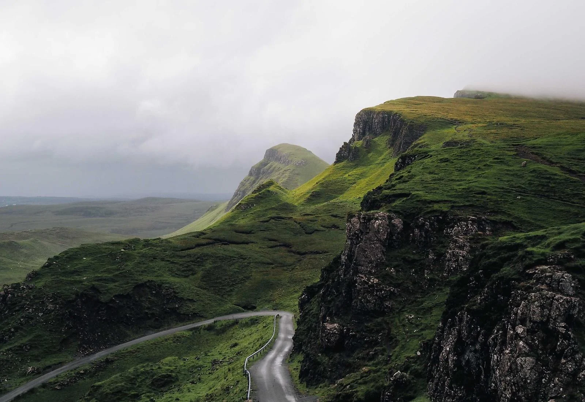
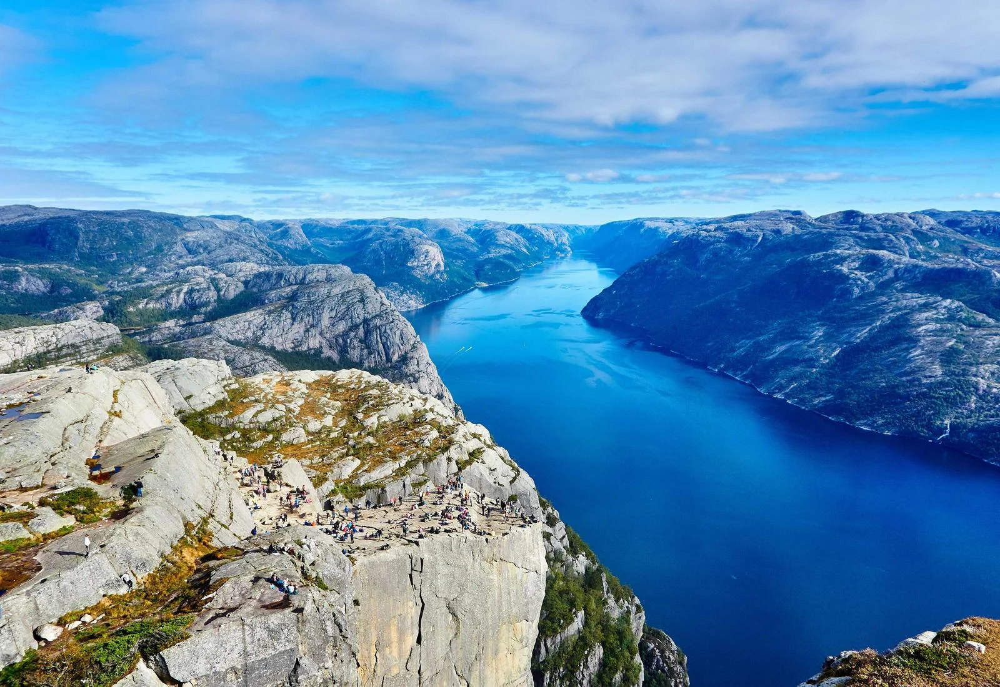
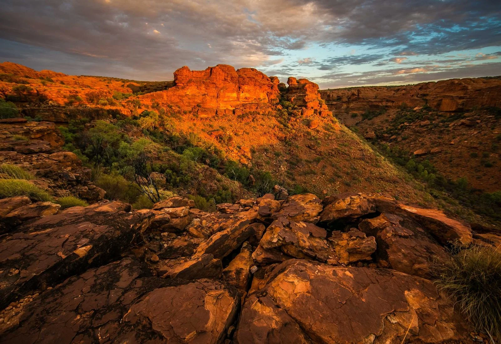
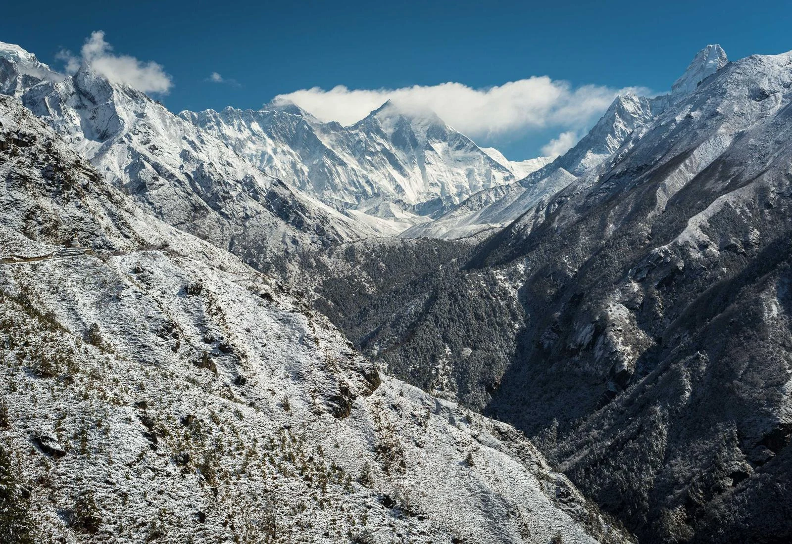

← All collections
LANDSCAPES
Landscapes
Mountains, lakes and open spaces, exploring light and depth in the natural world.








LANDSCAPES
Mountains, lakes and open spaces, exploring light and depth in the natural world.



